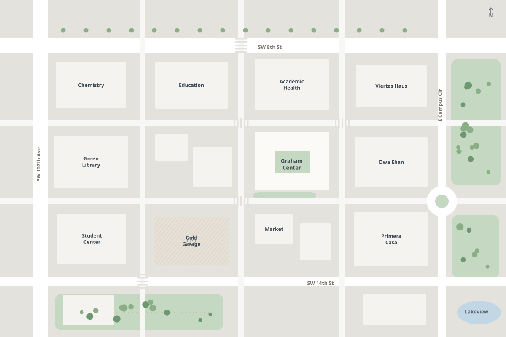
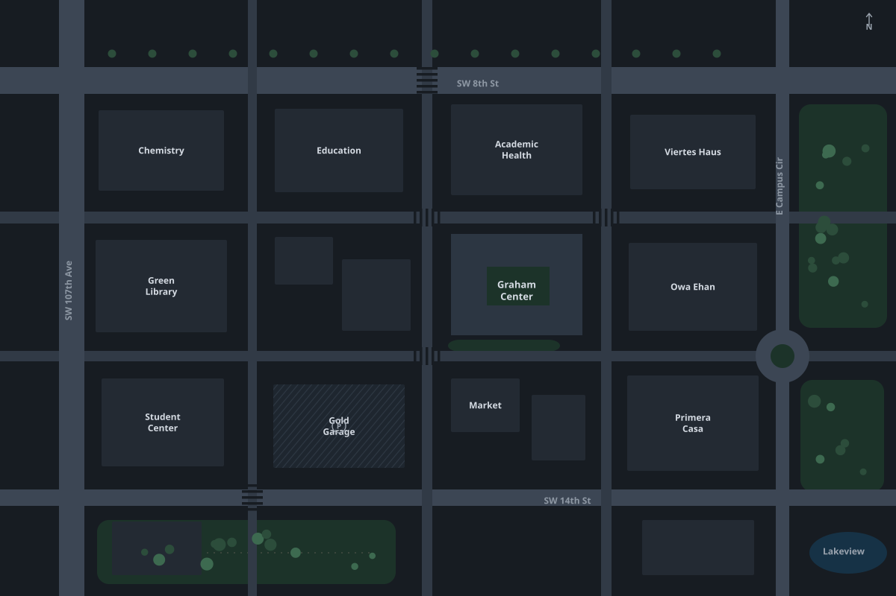

Active hazards
31
18 sample · 13 real · 3 miles
Hazards reported by StepSafe walkers within 3 miles of FIU Graham Center. Updates arrive live.
Active hazards
31
18 sample · 13 real · 3 miles
Last hour
1
Reported or seen again · 0 sample
Awaiting check
31
Not yet verified here · 18 sample
Cleared today
0
Seen clearing live on this page
Stream
Live
Updated just now
FIU Graham Center · a short name at this zoom. A count is that name, collapsed.
Schematic map. Nearby hazards of one kind share a short name. A lone hazard keeps its name on a square mark.


Schematic campus drawing
Named hazards
A round mark is several hazards of one name. A square mark is one hazard. Dashed labels are samples. Confidence stays in the list.